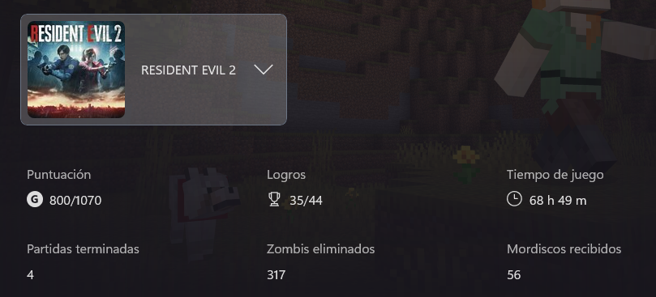
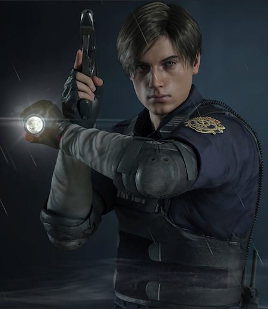
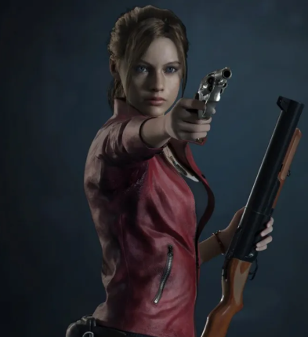

Resident Evil 2 Remake es un juego de terror y acción desarrollado por Capcom.
Este título es un claro parteaguas en la serie de videojuegos survival horror.
No solo porque lleva el horror al siguiente nivel, sino que también nos trae unas espectaculares vistas gracias al motor RE Engine.
Este título lo tengo al 74% pero lo quiero completar en un futuro porque simplemente es mi título favorito.


Leon S. Kennedy es un policía novato que vive una de las peores tragedias de su vida.
Tras su llegada a su primer día como policía en la ciudad de Raccoon City, se entera de la gran tragedia que azotó a la ciudad y de la cantidad de enemigos a los que tendrá que enfrentarse en su camino.

Claire Redfield es la hermana del oficial de la fuerza especial S.T.A.R.S. Chris Redfield.
Está en búsqueda de su hermano perdido, ya que no se había comunicado con él durante bastante tiempo.
Sus sospechas la llevan a Raccoon City, donde descubrirá que él está desaparecido en Europa tras perseguir a la compañía Umbrella. Claire deberá enfrentarse a los peores enemigos para poder sobrevivir y encontrar a su hermano.
Zombis eliminados en mis partidas: 317